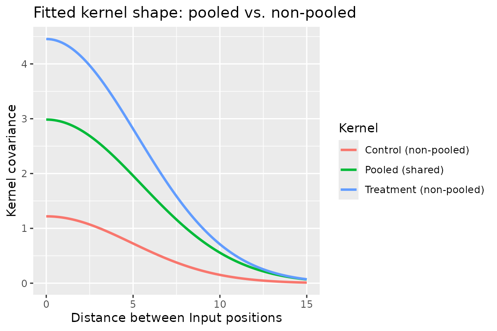

04 · Pooled vs. non-pooled: one kernel for every group, or one per group
Source:vignettes/04_pooled_vs_nonpooled.Rmd
04_pooled_vs_nonpooled.Rmd
library(BayesOmics)
library(keRnel)
library(ggplot2)fit_kernel(..., group_col = "Group", pooled = ) decides
whether a kernel is fit once, shared across every group
(pooled = TRUE, the default), or independently, one fit per
group (pooled = FALSE). Here, Treatment has a
genuinely larger kernel variance than Control –
still the same shared length_scale. The rest of the
framework is agnostic to this choice, whether in univariate or
multivariate analyses. For analyses with few replicates, the “pooled”
option is preferred to improve the quality of the kernel estimate. ##
Data
set.seed(2)
nb_id <- 15
ids <- paste0("ID_", seq_len(nb_id))
positions <- matrix(sort(runif(nb_id, 0, 30)), ncol = 1)
rownames(positions) <- ids
kern_control <- variance_kernel(variance = 1) * se_kernel(length_scale = 5)
kern_treatment <- variance_kernel(variance = 4) * se_kernel(length_scale = 5)
make_group_kernel <- function(kern_true, label, nb_sample = 10, var_sample = 0.3) {
Sigma <- evaluate(kern_true, positions, positions) + var_sample * diag(nb_id)
L <- t(chol(Sigma))
do.call(rbind, lapply(seq_len(nb_sample), function(s) {
y <- 10 + as.vector(L %*% rnorm(nb_id))
data.frame(ID = ids, Group = label, Sample = s, Input = positions[, 1], Output = y)
}))
}
data <- rbind(
make_group_kernel(kern_control, "Control"),
make_group_kernel(kern_treatment, "Treatment")
)Fit both ways
kern_template <- variance_kernel(variance = 1) * se_kernel(length_scale = 1)
kern_pooled <- fit_kernel(kern_template, data, prior_cov = 0.3,
group_col = "Group", pooled = TRUE, verbose = TRUE)$kern
# pooled = FALSE fits each group directly on its own (non-demeaned) data, so
# -- unlike the pooled fit above, where group_col's demeaning makes prior_mean
# irrelevant -- prior_mean must match Output's real baseline here (10).
fits_nonpooled <- fit_kernel(kern_template, data, prior_mean = 10, prior_cov = 0.3,
group_col = "Group", pooled = FALSE, verbose = TRUE)
kern_by_group <- lapply(fits_nonpooled, function(f) f$kern)
get_trainable_params(kern_pooled)
#> variance length_scale
#> 2.984924 5.454660
lapply(kern_by_group, get_trainable_params)
#> $Control
#> variance length_scale
#> 1.219856 4.896730
#>
#> $Treatment
#> variance length_scale
#> 4.454378 5.219194pooled = FALSE recovers each group’s own
variance (close to the true 1 and
4); pooled = TRUE compromises on a single
value in between, since it assumes one kernel is shared.
Visualizing the fitted kernels
Since these are variance * se_kernel(length_scale)
kernels, their shape is fully described by the covariance between two
Input positions as a function of the distance between them. Plotting
that curve for the pooled kernel and for each group’s own non-pooled
kernel shows exactly what “compromise” means here: the pooled curve sits
between the two, in both height (variance) and spread
(length_scale):
dist_grid <- seq(0, 15, length.out = 100)
ref <- matrix(0, nrow = 1)
grid_mat <- matrix(dist_grid, ncol = 1)
curve_df <- rbind(
data.frame(distance = dist_grid,
covariance = as.vector(evaluate(kern_pooled, ref, grid_mat)),
Kernel = "Pooled (shared)"),
data.frame(distance = dist_grid,
covariance = as.vector(evaluate(kern_by_group$Control, ref, grid_mat)),
Kernel = "Control (non-pooled)"),
data.frame(distance = dist_grid,
covariance = as.vector(evaluate(kern_by_group$Treatment, ref, grid_mat)),
Kernel = "Treatment (non-pooled)")
)
ggplot(curve_df, aes(distance, covariance, color = Kernel)) +
geom_line(linewidth = 1) +
labs(x = "Distance between Input positions", y = "Kernel covariance",
title = "Fitted kernel shape: pooled vs. non-pooled")
Takeaways
-
pooledinfit_kernel(..., group_col = "Group", pooled = )means the same thing as inposterior_mean(kern = NULL, pooled = )for the closed-form fit: one fit shared across every group, or one independent fit per group. - Non-pooled fitting is more faithful when groups genuinely differ (in
noise, or in the kernel’s own hyperparameters).
group_diff()/ovl_metric()still work in that case – they fall back to a Monte Carlo/KDE estimate automatically instead of the exact closed form (see the metric-choice article for the accuracy tradeoff of that fallback).